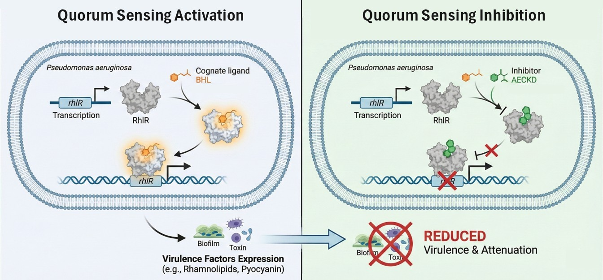

MSc Dissertation
Graduate Researcher | Institute of Advanced Research | 2022
The Villain: Pseudomonas aeruginosa
Imagine a tiny, rod-shaped mastermind that can survive almost anywhere—from soil to hospitals. This is Pseudomonas aeruginosa (PA). It doesn't just attack alone; it uses a "metabolic colloquium" or a cellular "telephone" system called Quorum Sensing (QS) to coordinate a massive strike.
When the "opera" starts, the bacteria produce:
- Biofilms: Protective shields.
- Toxins: Chemical weapons.
- Rhamnolipids: The focus of this study—they help the bacteria spread and destroy host cells.
P. aeruginosa produces Pyocyanin during active quorum sensing.
The Chemistry of Choice
The RhlR receptor acts as a molecular "Lock." We identified two "Keys" that fit this lock, but with very different results:
- BHL (The Agonist): The natural signal that triggers virulence and toxicity.
- AECKD (The Antagonist): Our inhibitor that mutes the bacteria, stopping the damage.
The Parallel: Frame this as "The Chemistry of Choice." Just as we choose which molecule to put in a receptor to cure a disease, we choose which "values" to put in our hearts to transform our lives.
Research Workflow: The Funnel of Discovery
1. Phytochemical Library
The project began by sourcing a vast library of phytochemicals from the IMPPAT database.
2. Site-based Size Screening
Compounds were computationally screened and filtered based on their molecular size to ensure a potential fit in the RhlR active site.
3. Molecular Docking
High-throughput virtual docking simulated the binding of thousands of compounds to the RhlR receptor, ranking them by affinity.
4. MM-GBSA
The binding free energy of top candidates was re-calculated using MM-GBSA for higher accuracy.
5. MD Simulation
GROMACS simulations were run to validate the stability of the protein-ligand complexes over time.
6. In-Vitro Extraction of AECKD
The winning compound, AECKD, was successfully extracted from its natural source, Shatavari (Asparagus racemosus).
7. Inhibition Test on P. aeruginosa
The extracted AECKD was tested on live bacterial cultures, confirming its inhibitory effect on virulence factor production.
The Secret Weapon: Ancient Wisdom + Supercomputing
We didn't just guess; we used In-silico (computational) screening of 7,756 natural compounds from Indian medicinal plant databases.
The Winner: A molecule called Aminoethylcysteine ketimine dimer (AECKD).
The Stats: It bound to the receptor with a stable energy (ΔG) of -62.45 kcal/mol.
The Proof: From the Lab to the Site
We went to the kitchen and the garden to find this molecule in Shatavari (Asparagus racemosus), garlic, and tomatoes.
The Result: Extracting AECKD from Shatavari successfully cut down rhamnolipid production by 11.55%. We proved that we can "stymie the opera" using natural, non-toxic inhibitors.
The Kitchen Lab Experiment
Goal: Find a natural ingredient that stops the bacteria from communicating.
Follow the steps below to extract phytochemicals and test them against P. aeruginosa.
1. Select Source
Cucumber
Garlic
Shatavari
Tomato
2. Process
3. Analysis
Safety Profile (AECKD Bio-Radar)
Hover to pause. Hover points for data.